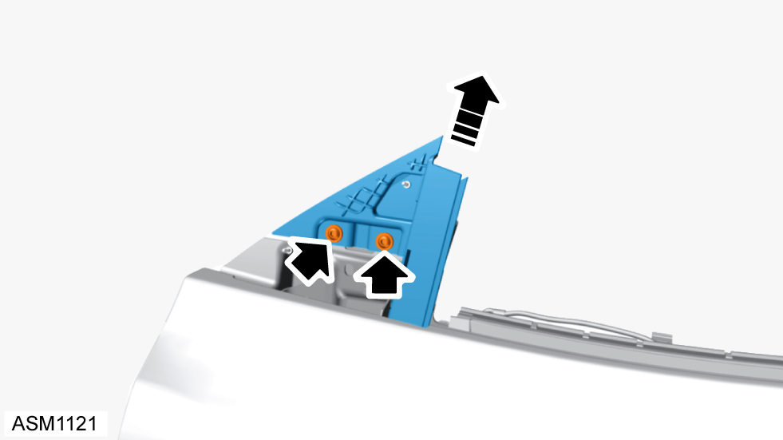

Window Guide Rail - Front - Left Side
Print
Operation Code: 11.02.03-02
Removal
- Remove door glass left side. Refer to procedure.
- Remove door mirror left side. Refer to procedure.
- Remove M6x20 bolt securing lower window guide rail to door. Torque 7 Nm.

- Remove M6x12 bolts (x2) securing upper window guide rail to door inner mounting bracket. Torque 10 Nm.
- Remove window guide rail.
Installation
- Installation is the reverse of removal procedure.